Relevant when deciding whether to build on top of a packaged personal-agent platform (Open Claw-style, chat-app-hosted) versus a custom interface: the talk names concrete failure modes -- cron-job and multi-agent unreliability, Discord/T...
This traces the speaker's own argument chain from platform complaints to his predicted endpoint, not an independently verified causal path (ours). The mechanism nodes are his stated alternative, not something the talk shows working at scale (ours).
“I called my wife and I was like, "Honey, it's over. It's over for all the apps, for all SaaS”
said at 04:08“it was and kind of is for me unreliable where it matters most, which is like cron jobs, multi-agents, the agents talking”
said at 10:51“Discord and Telegram were not meant for Life OS. We're just molding them into something, but they'll never be the right UI for you to manage your life fully”
said at 11:22“as soon as you pull the model, talking to GPT-5 talks to this feels like talking to a box box of oats”
said at 11:53“I don't believe in memory of agents. Like people are like, "Oh, we finally saw Mila Yov which solved memory." I'm like, "No, absolutely she didn't solve memory”
said at 15:31“I think that one-on-one chat with one agent sucks because if you think about delegating in your life, if you have like business and personal and family and blah blah blah”
said at 09:18“the role of AI is going to inverse. So the way we prompt AI right now, I think it's going to inverse and the fully productive people will be the one who delegate 99% of the stuff”
said at 18:04“That's 100% true because I think where we're going, we're actually not going to need most consumer apps”
said at 18:35(ours) This is a personal, anecdote-driven retrospective on 14 years of the speaker's own unfinished productivity apps rather than measured research; the reliability complaints and the 'AI prompts you' prediction are his own experience and forecast, not data from a study.
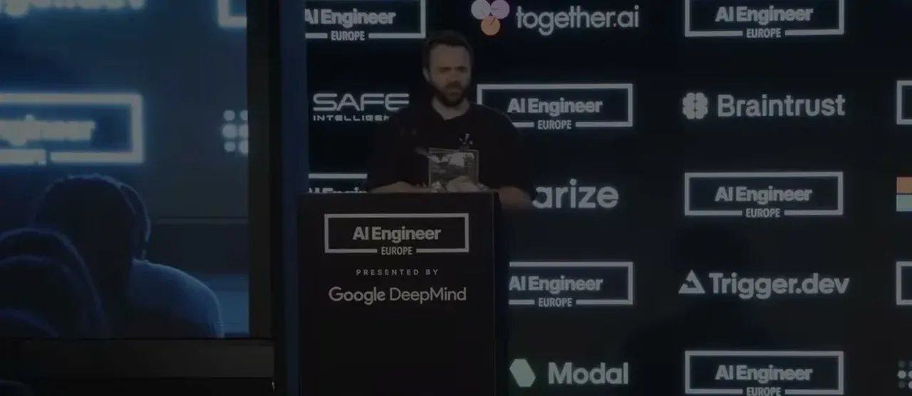
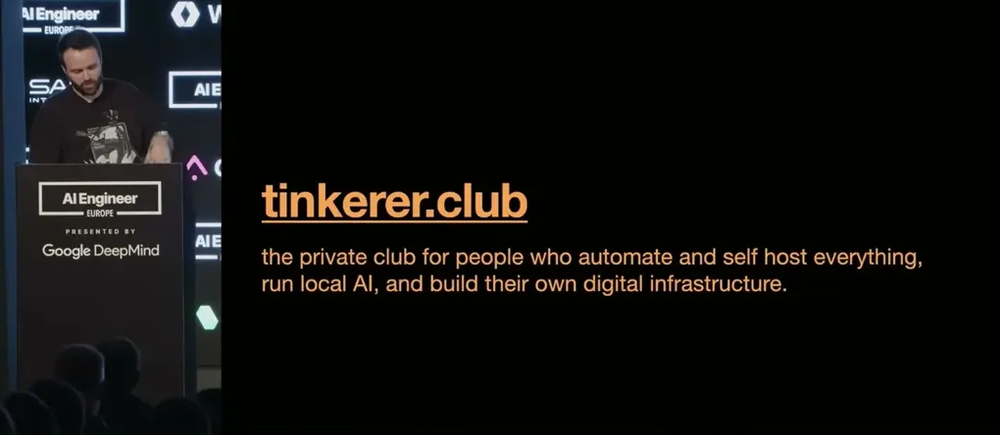
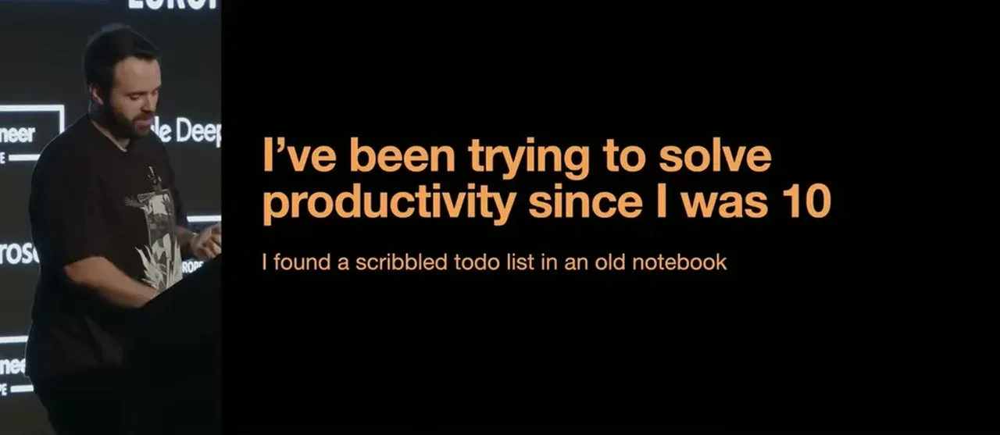
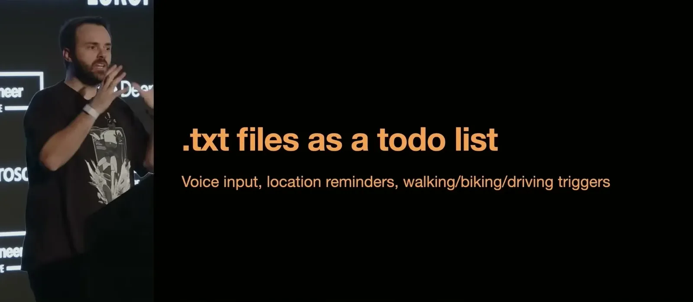
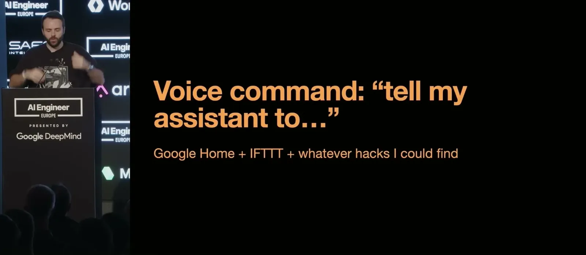
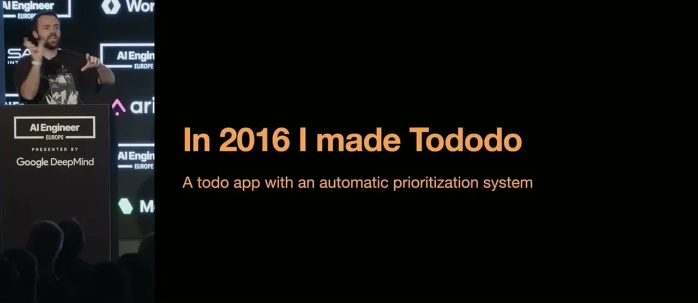
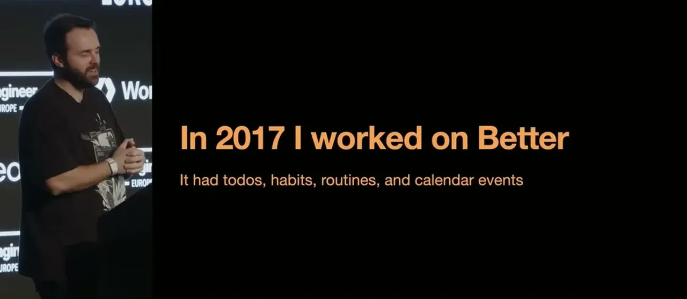
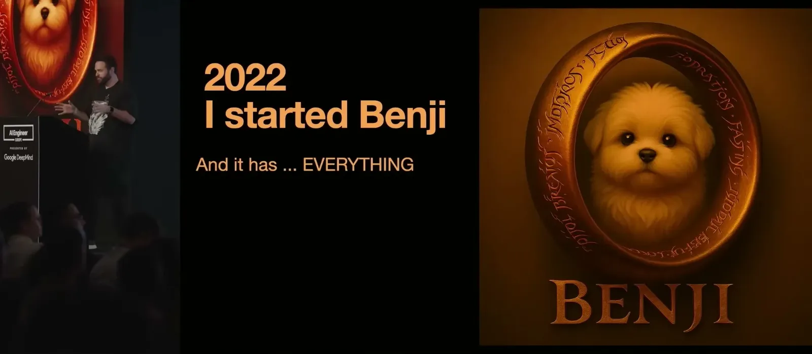
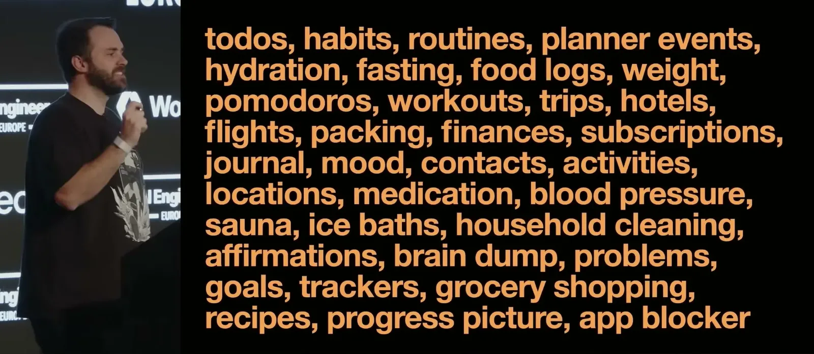
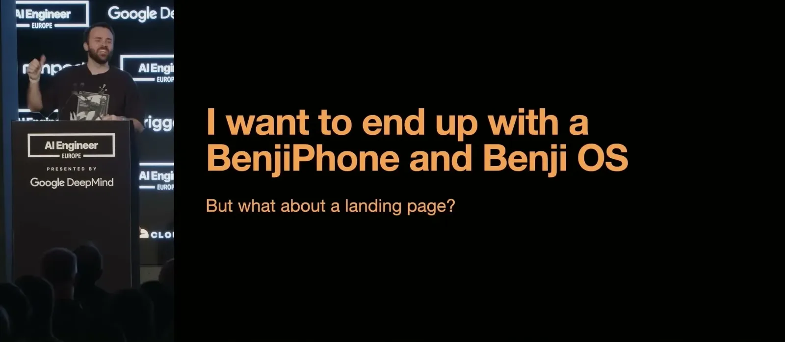
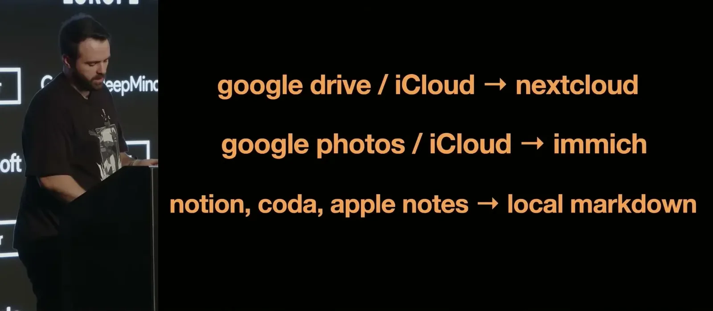
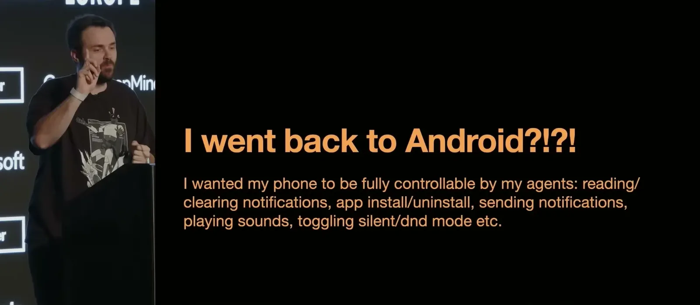
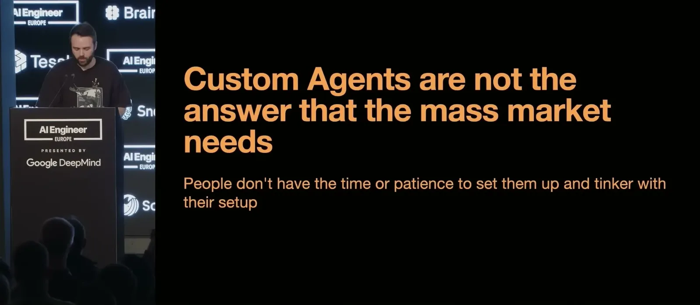
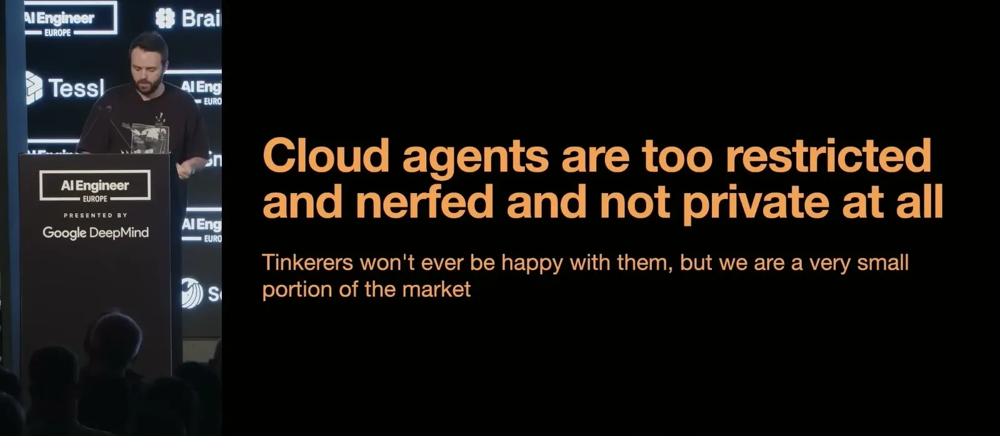
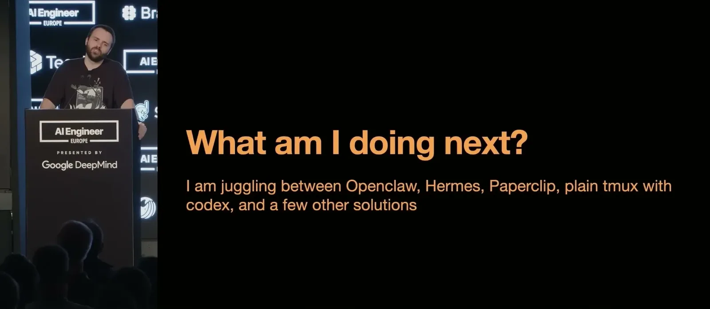
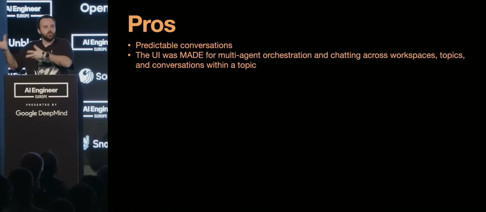
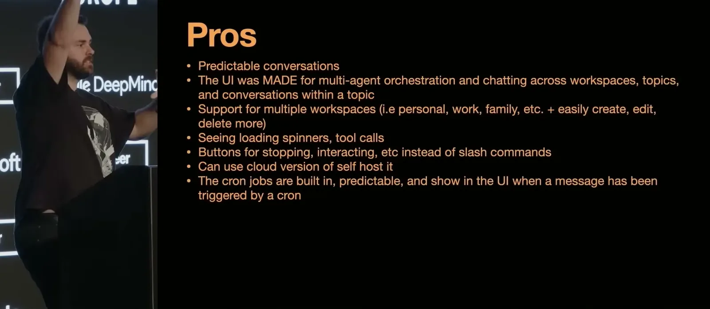
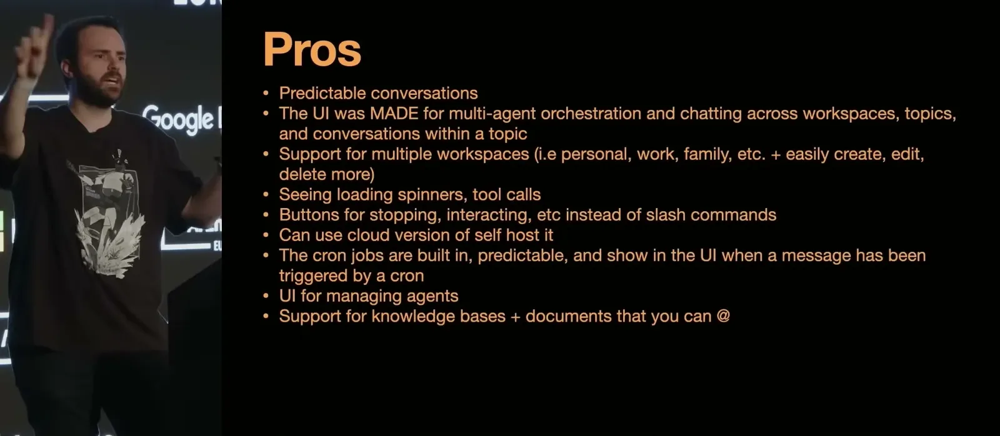
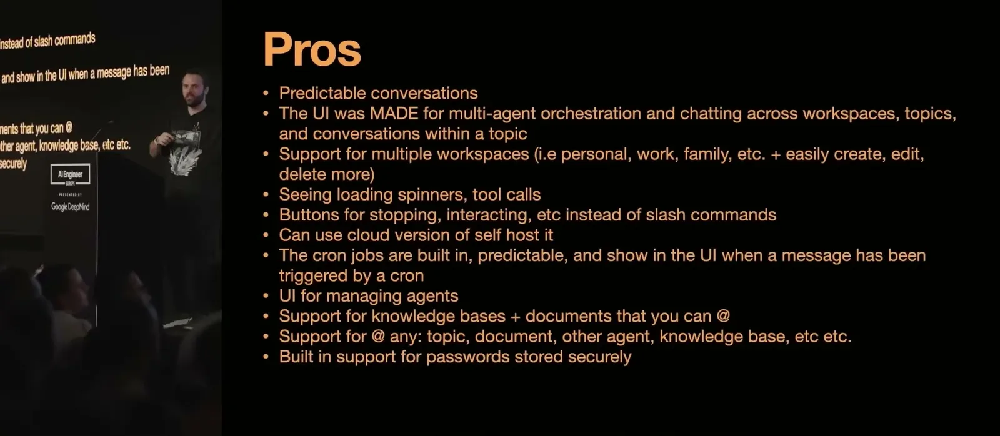
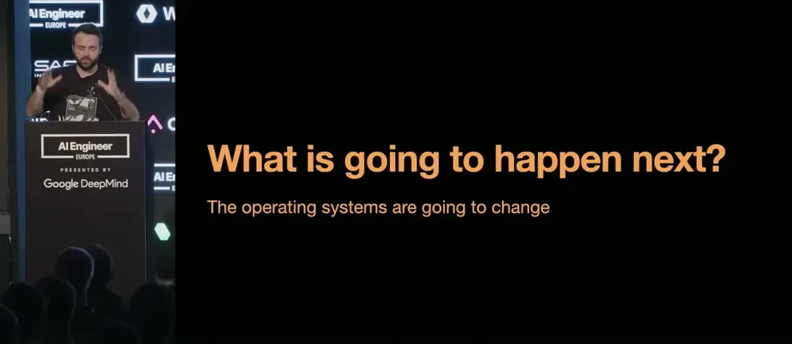
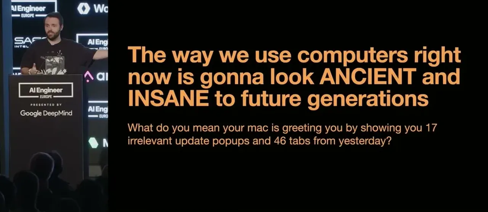
| Stance | Claim | t |
|---|---|---|
| asserts | When ChatGPT plugins launched, the speaker declared to his wife that it was the end of all apps and SaaS. | 04:08 |
| predicts | The direction of prompting will invert: a productive person will delegate most tasks and the AI will prompt them, rather than the person always initiating. | 18:04 |
| warns | Packaged agent platforms remain unreliable specifically at cron jobs and multi-agent coordination, which is exactly where reliability matters most. | 10:51 |
| warns | Discord and Telegram were not designed to serve as the interface for managing a person's entire life, despite being pressed into that role. | 11:22 |
| asserts | The speaker does not believe agent memory systems have solved memory, and instead relies on nested topics that inherit parent-topic descriptions as context. | 15:31 |
| predicts | Most consumer apps will become unnecessary as people interact through a generated, task-oriented interface instead. | 18:35 |
| warns | Heavily guardrailed models feel flat and personality-less compared to earlier, less-restricted versions of the same assistants. | 11:53 |
| recommends | A single one-on-one chat with one generalist agent loaded with all of a person's information is worse than scoping specialized agents to specific life domains. | 09:18 |
Machine-readable copy embedded in this page (script#ontology) and in the corpus ontology.